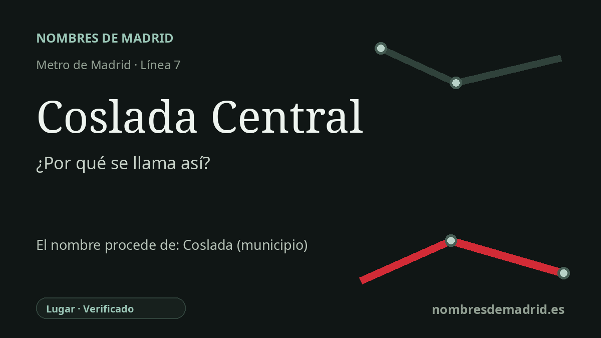

Publicado el · Investigación de Nombres de Madrid · Cómo verificamos cada origen · 7 fuentes consultadas
Respuesta rápida
Coslada Central debe su nombre al municipio de Coslada y a su papel como intercambiador central entre Metro y Cercanías. El topónimo Coslada es antiguo y discutido, con documentación medieval y varias explicaciones lingüísticas competidoras.
La historia del nombre
Coslada Central debe su nombre, ante todo, a Coslada, el municipio madrileño donde se encuentra la estación. La palabra “Central” tiene un sentido práctico: señala la estación de Metro que sirve el área urbana central del municipio y, sobre todo, el intercambio con la estación ferroviaria de Cercanías llamada Coslada.
El nombre de transporte es moderno, pero el topónimo que hay detrás es antiguo. La documentación histórica municipal describe Coslada como una población de fundación desconocida cuya presencia escrita aparece en la Baja Edad Media. Una fuente municipal sitúa la primera mención escrita en 1283, mientras que una síntesis histórica local que cita a Julio González da 1273; en cualquier caso, la documentación segura es medieval, no romana ni moderna.
El origen de la palabra Coslada no está resuelto. La historiografía local recoge varias explicaciones: una relaciona COS con piedra dura o pedernal y LADA con un paisaje de jaras; otra interpreta COS como pedernal y LATE como extenso; y la obra de toponimia prerrománica de Menéndez Pidal se cita para una comparación céltica con coslo/cosla, “avellana”. Estas teorías sirven como contexto, pero ninguna está demostrada.
La historia de la estación sí es más clara. MetroEste, la prolongación de la línea 7 hacia Coslada y San Fernando de Henares, entró en servicio en mayo de 2007. Las páginas oficiales de transporte identifican Coslada Central como estación de la línea 7 con correspondencia con Cercanías C-2, C-7 y C-8, y Renfe describe la estación de Metro como situada bajo la estación ferroviaria y formando un intercambiador Metro-Cercanías.
El nombre tiene dos niveles. La denominación directa está verificada: Coslada Central es la estación central y de intercambio de Metro para Coslada. El significado antiguo de Coslada solo puede considerarse probable en términos amplios, pues es un topónimo medieval con varias propuestas etimológicas y ninguna puede darse por definitiva.